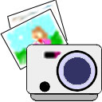

 PhotoPressTM Home Page
 PhotoPress is the
easiest way to print your digital photos.
PhotoPress is the
easiest way to print your digital photos.
- Simple drag & drop interface
- Powerful layouts let you pick sizes & duplicates -- print portraits,
contact sheets, or school photos
- Unique crop-zoom tool focuses on the best part of your photos
- Supports all popular printers
- Native OS X application, or use Mac OS 8.6 or later
- Only $24.95
We invite you to download a 30-day trial version.
Our users say:
Questions? Visit our FAQ
page.
Home | Services
| Products | Consultants
| Clients | Corporate
| Related | WashTech
This page was last modified on 13 November 2001. This site is maintained
by Richard
Wesley.
Copyright © 2001 Electric Fish, Inc. All Rights Reserved.